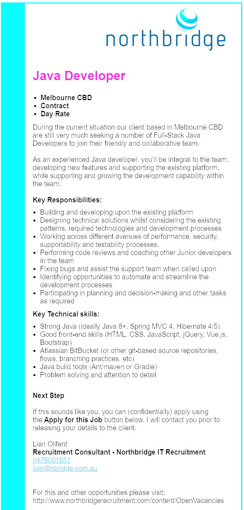

Name: Jock Gledhill
Student Number: s3858340
Email: s3858340@student.rmit.edu.auA little bit about me...
Hi, my name is Jock and I’m one of your information technology comrades!
Born in Darwin and brought up in Armidale NSW, my post high school education was spent in the United States where I was lucky enough to gain a Soccer Scholarship to a Community College in Kansas City called ‘Kansas City Kansas Community College’ (KCKCC).
There I studied Graphic Design, but my main priority was playing Soccer and enjoying the international experience.
More recently I’ve lived in Mexico with the intention of gaining more life experience and gaining fluency in Spanish which I’ve finally mastered - (you could say language learning and soccer are my favourite hobbies!)
Since then I’ve been living in Melbourne and working in Health Insurance but have become disillusioned and feel the time is right to explore another career. A friend of mine in the development industry advised me that coding is similar to language learning (which I love) and so I am here to explore the world of technology and coding in particular.
I’m studying IT because IT is the past, present and most importantly, the future.
As technology continues to ever impact the workplace as we know it, it has become more and more evident that an understanding and/or skill set in technology will only become more important as time moves forward.
My interest in IT started in my early teens due to a desire to network (MSN Messenger, anyone?) and game using a PC. By virtue of preferring to game on a PC rather than a console, one had to learn basic PC concepts and my interest was kindled from there.
Unfortunately to date I have no professional IT experience but I do hope that will change during or after this course!
I’ve decided to achieve my studies at RMIT due to its reputation in skills based higher education and its accessibility online. I believe it will give me the skills necessary to be job-ready as much as possible and will be a fine asset on my Resume.
I particularly hope to walk away from my studies here with a basic understanding of different aspects of technology so that I can collaborate with specialists in different fields of technology without the fear of only having an understanding of my chosen speciality alone.
Honestly, I don’t know yet! But here’s one that sounds interesting.
This particular job is of interest to me due to the combination of technical and communication skills.
enjoy working in both individual and team based settings and this particular advertisement suggests that both will be required.
With a primary focus on developing the platform and maintaining its function and security, this job sounds too diverse to be boring and upskilling will most likely be a must (as in many tech jobs I have found online to this point). This makes the job very appealing to me as I don’t want to be isolated and I enjoy the learning process.
The job description does not specifically list qualifications but rather skills which I find interesting.
However, some of the skills including ‘git-based repositories’ and ‘Java’’ are tools that we are already being introduced to slowly in just the first few weeks of my two fundamentals courses with RMIT which I find very encouraging. I believe in order to gain the skills and qualifications necessary to have an opportunity with this particular job I will need to learn the languages and tools listed and gain certification where necessary by the appropriate bodies.
I also believe it will be likely that I will need to demonstrate my knowledge of these skills and tools with a portfolio which I hope to build through both my degree at rmit and in my spare time. This portfolio could include apps that I have developed myself or an app that I have specifically developed that relates to the company to which I am applying to demonstrate my willingness to join their team. I will also aim to gain prior experience in the field through an internship and use my past team based and person focused experience in my previous professions to elevate my standing with the recruiter.
My previous experience in customer service, disability work and hospital claim assessment has taught me patience, team work, independent work and technical skills which I can combine with my tech qualifications and knowledge.I believe this experience will aid me in the areas of ‘coaching junior developers’, ‘participating in planning’ and ‘working across different avenues’ responsibilities listed in the advert.
Although I believe a Bachelor in IT is a good starting point for this particular job, I also believe gaining certification in Cyber Security and gaining work experience in the development field will be crucial for me to be considered for this job, or jobs like it in the future, along with a personal project that I can display to any potential recruiter. The qualifications can be gained through TAFE, Post Graduate university study or through the governing bodies that provide ‘certs’ in specific tech areas. I plan to gain as much experience as I can through internships and work experience on top of my studies to gain opportunities in the field.
I have taken the following Personality tests and these were my results.
Link: http://www.whatismylearningstyle.com/learning-style-test-1.html
Confident (in own ability to succeed)
This trait measures the extent to which you are confident in your ability to accomplish and achieve challenging tasks in the workplace.This trait assists employers to learn about your self-confidence in your ability to manage and outperform in the role. Self-confidence is one of the most important indicators for success in the workplace. Therefore, most employers regard it as one of the most important factors in making a selection decision. Your result implies that you generally believe in your ability to manage and accomplish projects and tasks. This belief, however, is not unlimited. You may sometimes feel lacking in confidence or ineffective in your abilities to accomplish goals in the workplace. Achievement Driven
This trait measures the extent to which you strive to achieve excellence and accomplish your goals. This trait assists employers to learn about your inner drive and ambition for excellence in the role. Employers are interested in taking onboard people who have an ambition to excel in what they do. It reassures the employer that you will invest all your efforts to achieve your work-related goals. Although some do not look favourably upon people with an extreme drive for excellence, most employers do.
Your result indicates that you are likely to have an inner drive and ambition to do your best to achieve successful outcomes in the workplace. Nevertheless, you are more interested in completing the tasks assigned to you than achieving excellence in what you do. It doesn’t mean that you will not invest effort and energy to accomplish the task at hand; it only means that your priority is to get it done well rather than to achieve the best result that you can. Personal opinion on test results
Purely based on the outcome of the three tests I would say that I am a flexible team member with the ability to lead if required and am not afraid to input ideas and methods to the group. I believe I should be considerate of these traits when forming a team as my team members will have to be equally engaged in the task at hand and willing to both take on board ideas of my own as well as the rest of the groups. The tests also highlight that I am open to taking on ideas of others and working collaboratively without taking constructive criticism personally. Being in a group with people who share these characteristics would give me the ability to perform at my best.
The application will combine social networking features, help and support features as well as educational features for the user.
The application will support carers of people living with a disability to create their own social networks, build and share their own educational resources and discuss their personal experience in a forum like format. The application will also have an inbuilt messenger service similar to that of facebook for users to interact directly with one another. The application will assist carers in gaining access to necessary and relevant services in their location with detailed and easy to understand explanations on how to effectively engage with these services and in particular the NDIS system. The application will also supply interactive activities to deal with the common stresses that come about from the responsibilities of caring for someone living with a disability.
In Australia alone there are an estimated ‘2.7 million carers’1 here are some quick statistics regarding carers in Australia.
Some quick statistics:
A large number of primary carers I have worked with have expressed a lack of understanding and acknowledgement from the general community and at times a feeling of hopelessness. They find their immediate social circles to not be understanding of their situation and more commonly find understanding in fellow caregivers and support workers. In my experience primary carers often feel they do not understand how to gain access to the necessary services they require such as the NDIS and/or Health Specialists and express confusion to the system(s) in place that are supposedly designed to support them.
My hope is that my Application will empower carers, improve their daily quality of life and in doing so the lives of their dependents also.The social networking feature will enable the user to connect to other carers and give the user the option of speaking directly to fellow carers of people living with the same disability as to that of their own dependent. This will enable the users to create their own support networks, share material such as images, video and documents. Users will be able to build their personal profiles in a social media type set up with specific descriptor options to highlight their dependents also and their traits.
There will be a full range of privacy options for the user.
The help and support feature will give easy access to professionals such as Speech Pathologists, Psychologists and Occupational Therapists in the users scope of distance. It will also include meditation exercises and motivational stories from other carers.
This particular feature will also hold all the relevant links and contact details for government and third party services related to disability including mental health services for both carers and dependents.
The educational feature will include information on a range of mental and/or physical disabilities and how to best understand the common side effects of these disabilities and what the people living with them experience. It will provide a list of tools and methods for dealing with likely scenarios to occur when caring for someone living with a particular disability and supply helpful resources that directly relate to these situations. The educational feature will have an emphasis on the NDIS system explaining how it functions, how to best engage with it and offer steps, advice and necessary links, numbers and locations for the service itself.
I’ve investigated the tools above to be of potential value in mobile app development as I will need to ensure that the styling and structure is taken care of (html/css) as well as the back end.
I could use react for building the user interface and Swift/Kotlin to take care of the IOS/Android development and Spring as the open source Java framework. I believe that using the online resources available as well as the skills developed through my degree at RMIT it is certainly feasible to learn the language and tool necessary for mobile app development. I believe that collaborating with people who have different skill sets either in front end or back end development will be essential in the development of the application.
I do see many hurdles to be overcome in that the application itself would require cooperation with third parties in the health industry as well as the study and application of the tools required to develop the application itself. Monetary backing and investment may be required to execute the project and particular law regarding privacy of information taken in the application will have to be studied and applied as well as adhering to all the rights and regulations defined by Australian law in regards to the the user.I believe a mid-rage pc spec wise would be sufficient in terms of hardware to enable the use of these tools.